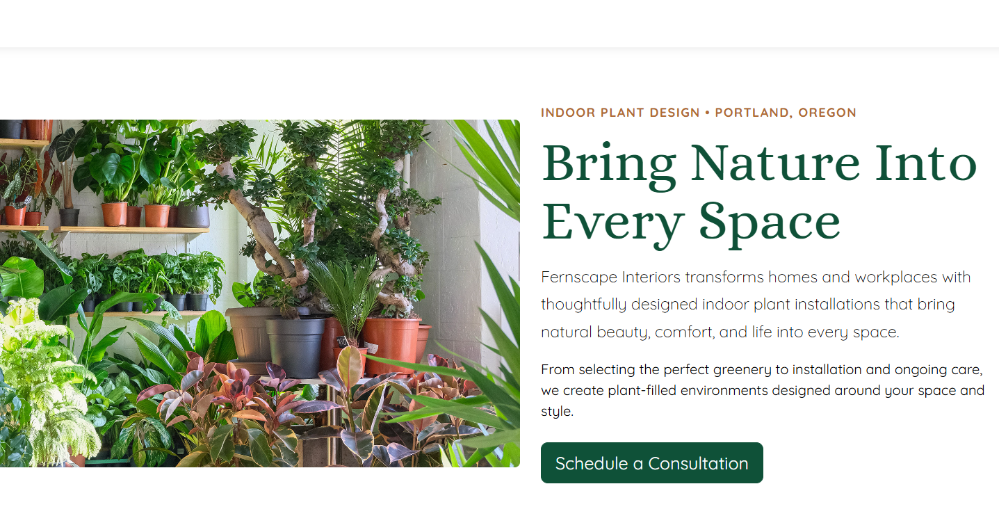

Visual Identity
A natural green and warm neutral color palette supports the plant-focused brand while maintaining a calm, professional appearance.
Responsive Web Design
A responsive four-page marketing website created for a fictional interior design business. The project focused on organizing the company's services into an inviting, accessible, and easy-to-navigate experience.
Web Designer and Developer
HTML, CSS, Bootstrap, Visual Studio Code
Responsive Design, Accessibility, SEO, and Brand Consistency

The Challenge
Fernscape Interiors needed a website that communicated its interior plant design services while feeling natural, professional, and approachable. The content needed to be organized so visitors could quickly understand the company's purpose, explore its services, and find a clear path to make contact.
The design also needed to remain consistent across four pages and work effectively on desktop, tablet, and mobile devices.
My Approach
I began by organizing the content into a simple page structure with clear navigation, readable sections, and visible calls to action. I used natural colors, plant imagery, and spacious layouts to support the brand while keeping the information easy to scan.
I then built the website with HTML, CSS and Bootstrap, testing the layout at different screen sizes and refining the typography, spacing, contrast, image descriptions, and metadata.
Design Decisions
A natural green and warm neutral color palette supports the plant-focused brand while maintaining a calm, professional appearance.
Strong headings, shorter paragraphs, and clearly separated sections make the website easier to scan and help visitors find important information.
Flexible grids, Bootstrap components, and responsive spacing allow the content to adapt across desktop, tablet, and mobile devices.
Semantic HTML, descriptive alternative text, readable typography, color contrast, and clear navigation improve the experience for more users.
Outcome
The final website brings the Fernscape Interiors brand together across four coordinated pages. Visitors can learn about the business, explore its services, and find a clear way to schedule a consultation.
This project strengthened my understanding of responsive development, accessibility, content organization, visual consistency, and the process of refining a website through testing and feedback.